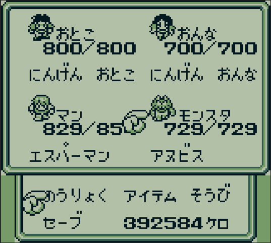
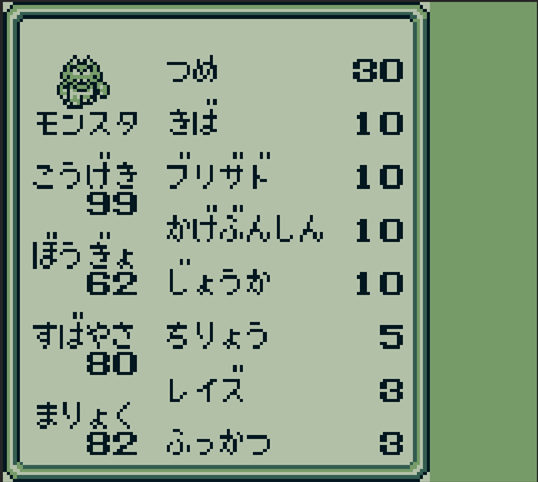
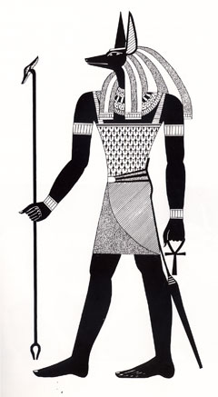

アヌビス
ホーム > ＧＢサガ > 魔界塔士Sa・Ga > 魔界塔士Sa・Gaについて > モンスター > 最強モンスター > アヌビス
アヌビス
ステータスと能力
 
アヌビスの特徴
HPは729でLv14モンスターの中では7位の値。こうげきが99で最も高く、次いでまりょくが82で高い値となっている。使用できる能力はこうげきとまりょく依存で、補助や回復が多い。これはエジプト神話のアヌビス神のイメージとも合致する。
| 能力 | 依存 | 威力 | ラスボスに期待できるダメージ |
|---|---|---|---|
| つめ | こうげき | 2 | |
| きば | こうげき | 6 | |
| ブリザド | まりょく | 4 | |
| かげぶんしん | -（補助） | ||
| じょうか | - | ||
| ちりょう | - | ||
| レイズ | - | ||
| ふっかつ | - |
名前の由来
アヌビスは、エジプト神話に登場する冥界の神。死者の守護神で、死んだ人間の安らかな眠りと来世をサポートしてくれる。ミイラづくりの神でもある。

図はアヌビス Anubis(仏語：Anubis)より引用
アヌビスが死者の守護者とされたのには、墓所にたむろう野犬たちが墓所を守っているように見えたから、もしくはまたは犬の忠誠心から、亡き飼い主につきそう姿が死者を守っているように見えたことが理由ではないか、とされている。
アヌビスはこのような神様なので、魔界塔士サガにおいては、じょうかやちりょう、レイズ、ふっかつなど、癒しや生にかかわる能力を保有している。
参考